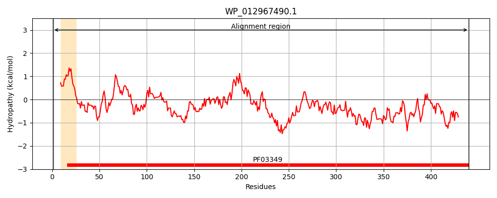
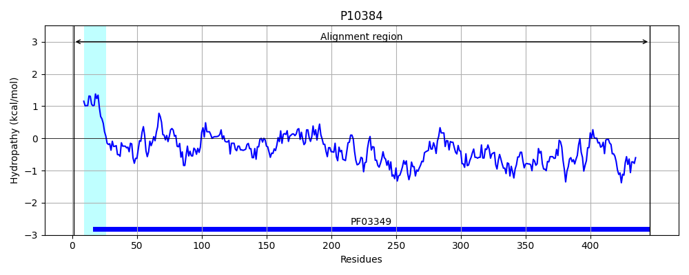
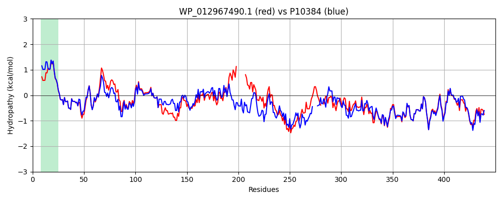

Hit Accession: P10384
Hit TCID: 1.B.9.1.1
Hit Description: gnl|BL_ORD_ID|8991 gnl|TC-DB|P10384|1.B.9.1.1 LONG-CHAIN FATTY ACID TRANSPORT PROTEIN PRECURSOR (OUTER MEMBRANE FADL PROTEIN) (OUTER MEMBRANE FLP PROTEIN) - Escherichia coli.
Mach Len: 450
e:0.000000
Query TMS Count : 1
Hit TMS Count: 1
TMS-Overlap Score: 0.900000
Predicted Substrates:CHEBI:1366;resveratrol, CHEBI:7483;(S)-naringenin, CHEBI:8923;rutin
BLAST Alignment:
Score: 1858 , Bit scores: 720 bits, E-value: 0.0e+00, Alignment length: 450, Percentage identity: 78
Query: 1 MSQKTRFTQSALAVAVALVSTQAWSAGFQLNEFSSSGLGRAYSGEGAIADDAGNASRNPALIMMFDRPTMSAGAVFVDPGVNVSGTSPTGKSLNADNIAPTAWVPNFHFVAPINDQFGWGASITSNYGLATEYNDDYAAGSMGGKTDLTTANFNLSGAYRLDSNWSFGLGFDAVYAKAKIERYAGDLGQIVAGSGALPP--------ALAGQVAKIPADTQIAHLNGNAWGFGWNAGILYELDKNNRYGFTYRSEVKIDFDGNYRSSLPAAYNQILGNFGL--PAGTNGQTTGGSLTLNLPEMWELSGYNRVAPQWAVHYSLTYTSWSQFQELKATGSNGQTLFYKEEGFKDAYRLALGTTYYYDDNWTFRTGIAFDDSPVPANNRSISIPDQDRLWLSAGTTYAFNKDASVDVGLSYMHGQHVEIKEGPYTFRSEGTAWLYGANFNYRF 440
MSQKT FT+SALAVAVAL+STQAWSAGFQLNEFSSSGLGRAYSGEGAIADDAGN SRNPALI MFDRPT SAGAV++DP VN+SGTSP+G+SL ADNIAPTAWVPN HFVAPINDQFGWGASITSNYGLATE+ND YA GS+GG TDL T N NLSGAYRL++ WSFGLGF+AVYA+AKIER+AGDLGQ+VAG P ALA I ++T+IAHLNGN WGFGWNAGILYELDKNNRY TYRSEVKIDF GNY S L A+N N+GL P T G T G LTLNLPEMWE+SGYNRV PQWA+HYSL YTSWSQFQ+LKAT ++G TLF K EGFKDAYR+ALGTTYYYDDNWTFRTGIAFDDSPVPA NRSISIPDQDR WLSAGTTYAFNKDASVDVG+SYMHGQ V+I EGPY F SEG AWL+G NFNY F
Sbjct: 1 MSQKTLFTKSALAVAVALISTQAWSAGFQLNEFSSSGLGRAYSGEGAIADDAGNVSRNPALITMFDRPTFSAGAVYIDPDVNISGTSPSGRSLKADNIAPTAWVPNMHFVAPINDQFGWGASITSNYGLATEFNDTYAGGSVGGTTDLETMNLNLSGAYRLNNAWSFGLGFNAVYARAKIERFAGDLGQLVAGQIMQSPAGQTQQGQALAATANGIDSNTKIAHLNGNQWGFGWNAGILYELDKNNRYALTYRSEVKIDFKGNYSSDLNRAFN----NYGLPIPTATGGATQSGYLTLNLPEMWEVSGYNRVDPQWAIHYSLAYTSWSQFQQLKATSTSGDTLFQKHEGFKDAYRIALGTTYYYDDNWTFRTGIAFDDSPVPAQNRSISIPDQDRFWLSAGTTYAFNKDASVDVGVSYMHGQSVKINEGPYQFESEGKAWLFGTNFNYAF 446 | Protein Hydropathy Plots: |
|---|
|  |  |
Pairwise Alignment-Hydropathy Plot:
|
|---|
|  |